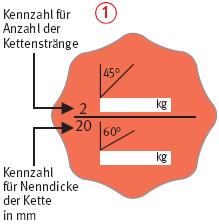

Anschlagketten Güteklasse 8
Tragfähigkeitstabellen
|
|
- Nur gekennzeichnete Ketten verwenden (Kettenanhänger
 ).
).
- Aufhängeglieder von Anschlagketten so groß wählen, dass sie im Kranhaken frei beweglich sind.
- Ketten vor dem Anschlagen ausdrehen.
- Ketten nicht mehrfach um Lasthaken schlingen und nicht unter Last über scharfe Kanten ziehen.
- Steifgezogene Ketten und Ketten mit gebrochenem oder angerissenem Kettenglied, Querschnittsminderung, Korrosionsnarben u. a. sofort aussondern und nicht mehr verwenden.
- Ketten nicht mehr benutzen, wenn
- eine Längung um mehr als 5 % bei der Kette oder beim Einzelglied (innen) gemessen wird,
- eine Abnahme der Nenndicke an irgendeiner Stelle um mehr als 10 % festgestellt wird.
- Art, Umfang und Fristen erforderlicher Prüfungen festlegen (Gefährdungsbeurteilung) und einhalten, z. B.:
- arbeitstäglich auf einwandfreien Zustand,
- nach Einsatzbedingungen, mind. 1 x jährlich durch eine "zur Prüfung befähigte Person" (z. B. Sachkundiger).
Kennzeichnung von zweisträngigen Anschlagketten der Güteklasse 8

Die Tabellen gelten für Anschlagketten nach DIN EN 818-4 "Kurzgliedrige Rundstahlketten für Hebezwecke – Sicherheit – Teil 4: Anschlagketten Güteklasse 8" und DIN 5688 Teil 3 "Anschlagketten, Hakenketten, Ringketten, Kranzketten, Einzelteile, Güteklasse 8"
*) Anmerkung: Ketten nach DIN EN 818-4 entsprechend Anhänger höher belastbar
07/2019